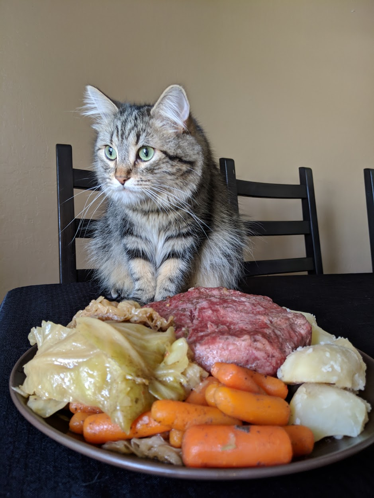

Corned Beef

Description
About
Ingredients
- Get pre-brined corned beef
- 4 large carrots
- 6 to 8 russet potatoes
- 1 Six pack of Guiness or stout of choice
Instructions
- Peel carrots and potatoes
- Cut potatoes and carrots into even size pieces
- Drop corn beef into slow cooker with the included pack of seasoning
- Add carrots and potatoes to the slow cooker
- Pour two of the beers over the meat and veggies
- Cook on high for 4-6 hours or low for 7-8 hours
- Enjoy with the rest of the beer